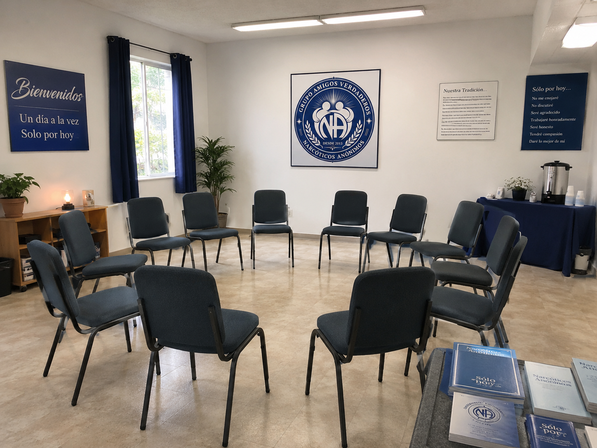
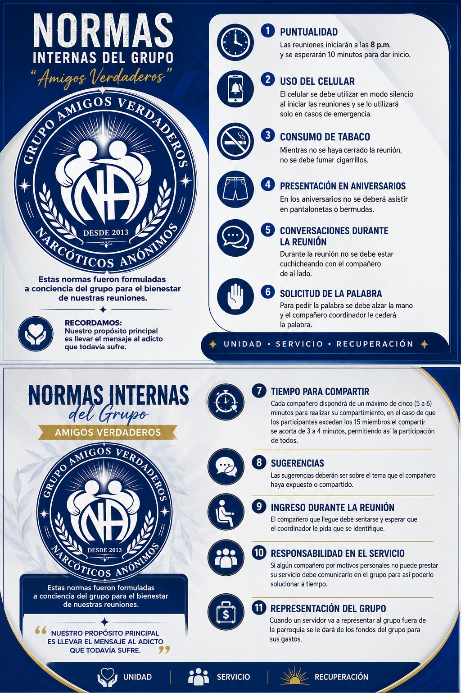

Reunión presencial
MAR20h00
Martes
Reunión regular de recuperación, unidad y compañerismo.
PresencialEn el Grupo Amigos Verdaderos encontrarás un espacio de respeto, anonimato y apoyo entre personas que comparten el camino de la recuperación.
Somos un grupo de Narcóticos Anónimos formado por personas (hombres y mujeres) que se reúnen para compartir fé, fortaleza y esperanza.
No se te pedirá cita previa, documentos ni pagar una cuota para asistir. Puedes llegar, escuchar y participar cuando te sientas preparado. El grupo no juzga tu historia: nos enfocamos en lo que puedes hacer de hoy en adelante para construir una vida diferente.

Nos reunimos tres veces por semana en la parroquia Luz de América, Santo Domingo.
Reunión regular de recuperación, unidad y compañerismo.
PresencialEspacio para compartir fé, fortaleza y esperanza.
PresencialReunión de cierre de semana y acompañamiento en recuperación.
PresencialPuntualidad: las reuniones están programadas para las 20h00 y se esperan 10 minutos antes de dar inicio.
Ver ubicaciónAquí celebramos a los compañeros que cumplen un año más en recuperación.
Estas normas fueron formuladas a conciencia del grupo para el bienestar de nuestras reuniones.

Ver imagen completaLas reuniones iniciarán a las 8 p. m. y se esperarán 10 minutos para dar inicio.
El celular se debe utilizar en modo silencio al iniciar las reuniones y se lo utilizará solo en casos de emergencia.
Mientras no se haya cerrado la reunión, no se debe fumar cigarrillos.
En los aniversarios no se deberá asistir en pantalonetas o bermudas.
Durante la reunión no se debe estar cuchicheando con el compañero de al lado.
Para pedir la palabra se debe alzar la mano y el compañero coordinador le cederá la palabra.
Cada compañero dispondrá de un máximo de cinco (5 a 6) minutos para realizar su compartimiento. Si los participantes exceden los 15 miembros, el compartir se acorta de 3 a 4 minutos, permitiendo así la participación de todos.
Las sugerencias deberán ser sobre el tema que el compañero haya expuesto o compartido.
El compañero que llegue debe sentarse y esperar que el coordinador le pida que se identifique.
Si algún compañero por motivos personales no puede prestar su servicio debe comunicarlo en el grupo para así poderlo solucionar a tiempo.
Cuando un servidor va a representar al grupo fuera de la parroquia se le dará de los fondos del grupo para sus gastos.
No tienes que saber nada del programa para comenzar.
Una persona del grupo te dará la bienvenida. No es necesario registrarte ni explicar por qué llegaste.
Puedes limitarte a escuchar. Compartir es voluntario y cada persona habla desde su propia experiencia.
La recuperación se construye poco a poco. Te animamos a volver y conocer a otras personas en recuperación.
En las reuniones procuramos crear un ambiente donde cada persona pueda sentirse escuchada, respetada y acompañada, sin que importe su edad, raza, identidad sexual, credo, religión ni la falta de esta última.
Quiero asistir a una reuniónCuidamos la identidad de quienes participan y evitamos divulgar lo escuchado.
No damos sermones ni discutimos la experiencia de otra persona.
Compartimos herramientas prácticas para mantenernos limpios un día a la vez.
Cada persona decide cuándo hablar, cómo colaborar y qué ritmo seguir.
Estas tarjetas pueden enlazarse más atrás o más adelante a páginas internas, imágenes o recursos oficiales.
Puedes comunicarte con el grupo antes de tu primera reunión. También puedes llegar acompañado si la modalidad de la reunión lo permite.
Conoce nuestros horarios y acércate a nuestro Grupo Amigos Verdaderos.
El mapa muestra la parroquia de forma referencial.
Narcóticos Anónimos
Horario de reuniones:
Martes, jueves y sábados a las 20h00. Se esperan 10 minutos para dar inicio.
Santo Domingo de los Tsáchilas, Ecuador
{kind=link}
{kind=link}